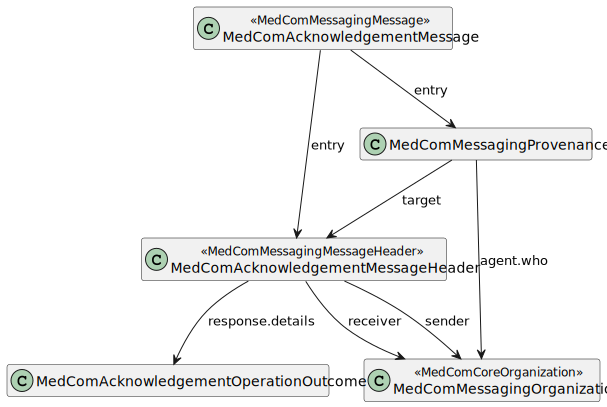

DK MedCom acknowledgement
2.0.0 - Release

DK MedCom acknowledgement
2.0.0 - Release

This page is part of the DK MedCom Acknowledgement (v2.0.0: Release) based on FHIR R4. This is the current published version in its permanent home (it will always be available at this URL). For a full list of available versions, see the Directory of published versions 
| Official URL: http://medcomfhir.dk/ig/acknowledgement/ImplementationGuide/medcom.fhir.dk.acknowledgement | Version: 2.0.0 | |||
| Active as of 2022-10-05 | Computable Name: MedComAcknowledgement | |||
This implementation guide (IG) is provided by MedCom to describe the use of FHIR ®© Acknowledgement in message based exchange of data in Danish healthcare.
A MedCom Acknowledgement message (Danish: Kvittering) corresponds to a receipt of a delivered message. Every time a system receives a MedCom FHIR message, e.g. a HospitalNotification or a CareCommunication, it shall be acknowledged with a MedCom Acknowledgement message, stating if the transfer was successful and the message validated correctly or not. In other word, does a MedCom Acknowledgement message hold information about how delivery of a message went. MedCom FHIR messaging complies with reliable messaging and associated governance, which describes the value and needs of acknowledge all messages.
The following diagram depicts the structure of the Acknowledgement message.

The Acknowledgement message follows the general MedCom FHIR messaging structure, except that the carbon-copy destination is not allowed. The following sections describe the overall purpose of each profile.
A MedComAcknowledgementMessage is inherited from MedComMessagingMessage, and constrains the profile since the MessageHeader shall be of the type MedComAcknowledgementMessageHeader.
MedComAcknowledgementMessageHeader is inherited from MedComMessagingMessageHeader, and constrains the profile as carbon-copy is not allowed and it requires a respones code, which states if the delivery of the message went well or not.
An Acknowledgement message is required in MedCom FHIR Messaging and follows the recommandations from HL7 FHIR ValueSet response-code.
MedComAcknowledgementOperationOutcome shall be included in the bundle when the MessageHeader.response.code is different from ‘ok’. Further, an OperationOutcome resource may be included when the MessageHeader.response.code is ‘ok’, e.g. in cases where the received message is valid, but it is a dublet. OperationOutcome contains a description of the error and the severity of the error.
The ValueSet MedComAcknowledgementIssueDetailValues attached to the element OperationOutcome.response.detail.coding is used to describe the issue more detailed. Currently, the ValueSet is fairly empty, as MedCom wants input from IT-vendors on which codes give values in their systems. Across sectors there must be an agreed list of codes.
The Acknowledgement message contains three timestamps:
The three timestamps are registered at different time during Acknowledgement message generation and sending. The Acknowledgement message is sent when a system receives a FHIR message e.g. when a municipality receives a HospitalNotification message from the hospital, the it-system will evaluate the message. Based on the result from the evaluation, the system will generate an acknowlegement message that represet the evaluation results. This means that if the HospitalNotification is evaluated positive the acknowlegdement is as well positive. Whereas if the HospitalNotification is evaluated negative then a negative Acknowledgement is generated and send. When the acknowledgement message is generated a Bundle.timestamp is registered. When the acknowledgement message is sent the Provenance.occuredDateTime[x] and Provenance.recorded time stamp is registered. Note that the Provenance.occuredDateTime[x] is a human redable, where Provenance.recorded is a system readable.
The simplified examples contain the required content of an Acknowledgement message. The messages illustrate an OK response and a fatal-error response based on a received message. The illustrations shows that two provenance resouces are included when sending an Acknowledgement message, one for the messages the is being acknowledged and one for the Acknowledgement message.
All profiles shall have a global unique id by using an UUID. Read more about the use of ids here.
More examples of a Acknowledgement message can be found here. For examples of a profile, take a look under the tab ‘Examples’ on the site for the given profile.
Please notice, that in the following examples is the Provenance resources listed as an array. This is just an example of an order, resources may be listed in any order.
On MedCom Terminology IG all referenced CodeSystem and ValueSets developed by MedCom can be found.
This IG has a dependency to the MedCom Core IG, MedCom Messaging IG and DK-core v. 2.0.0, where the latter is defined by HL7 Denmark. This is currently reflected in the profiles MedComAcknowledgementMessage, and MedComAcknowledgementMessageHeader which both inherits from profiles defined in MedCom Messaging IG.
On the introduction page for Acknowledgement an introduction and use cases can be found.
MedComs FHIR profiles and extension are managed in GitHub under MedCom: Source code
A description of governance concerning change management and versioning of MedComs FHIR artefacts, can be found on the link.
In the Quality Assurance report (QA-report) for this IG, there is an error with the following description: Reference is remote which isn’t supported by the specified aggregation mode(s) for the reference (bundled). The error occurs when creating instances of the profiles and is due to some elements having a Bundled flag {b}, however the referenced profile in the element is not included in the Bundle in an instance, since the instance only represents a part of the entire message. This will not influence the implementation by IT-vendors.
MedCom is responsible for this IG.
If you have any questions, please contact fhir@medcom.dk or write to MedCom’s stream in Zulip.
{kind=link}
{kind=link}